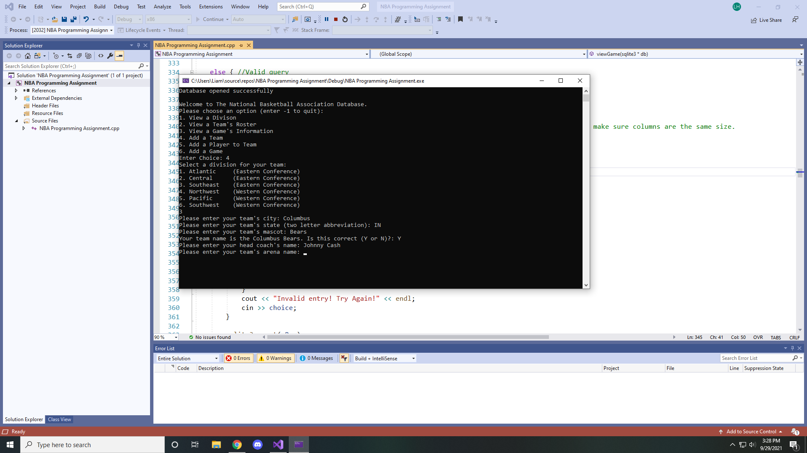
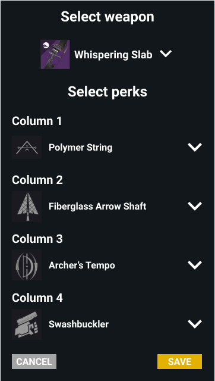

Portfolio
-
Seliana Armory

Based on the game Monster Hunter by Capcom, the Seliana Armory is a database crafted in SQL with a C++ front end that simulates the type to transactions the Armory would be expected to perform. The user is able to both query the database for information about the variety of Hunters, companions, weapon and armor, but also add, remove, or change the information within the database.
-
NBA Database
Creation of a database in SQL that emulates the roster of each NBA team, along with keeping track of previous game results. Created with a C++ front end that allows users to view, change, or update specific information within the database, and commit those changes permanently to the SQL backend.
-
When You Fish Upon a Star

A C++ terminal based game that allows the player to live in a cabin in the woods. The player is able to go fishing at the nearby lake for fish, interact with the residents, and sell their catch to upgrade their equipment. Some features include a functioning save system, up to 8 residents to interact with and 12 different varities of fish to catch!
-
Destiny 2 Roll Finder
A web app that interacts directly with Bungie's Destiny 2 API that allows the user to search for weapon rolls that drop in the game. With mobile functionality, the app is able to search for a certain combination of perks in both the player's inventory, as well as the possibility of that perk set to drop on another weapon. If the specified search terms are found in the player's inventory, allows them to equip that weapon to their character in game in real time (Work in Progress).
-
Portfolio Website
A portfolio website created to function as a digital resume and information page. Still a work in progress.